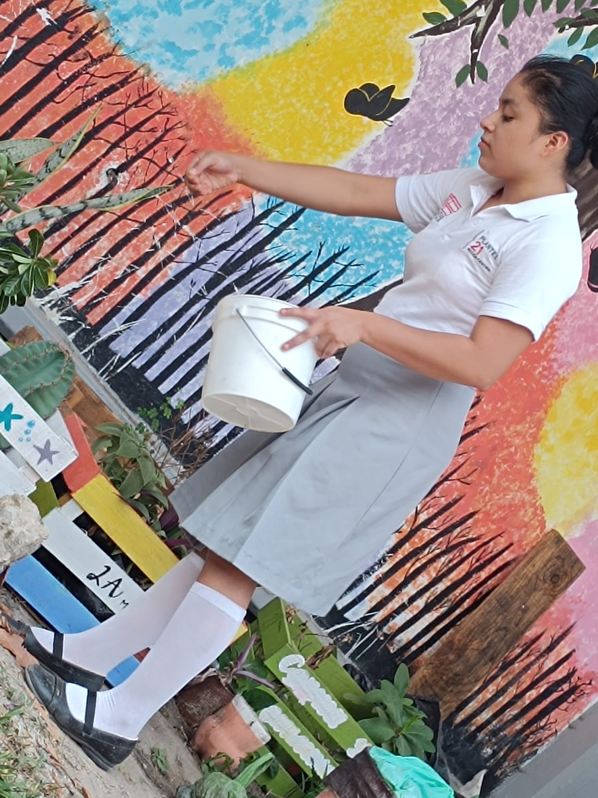
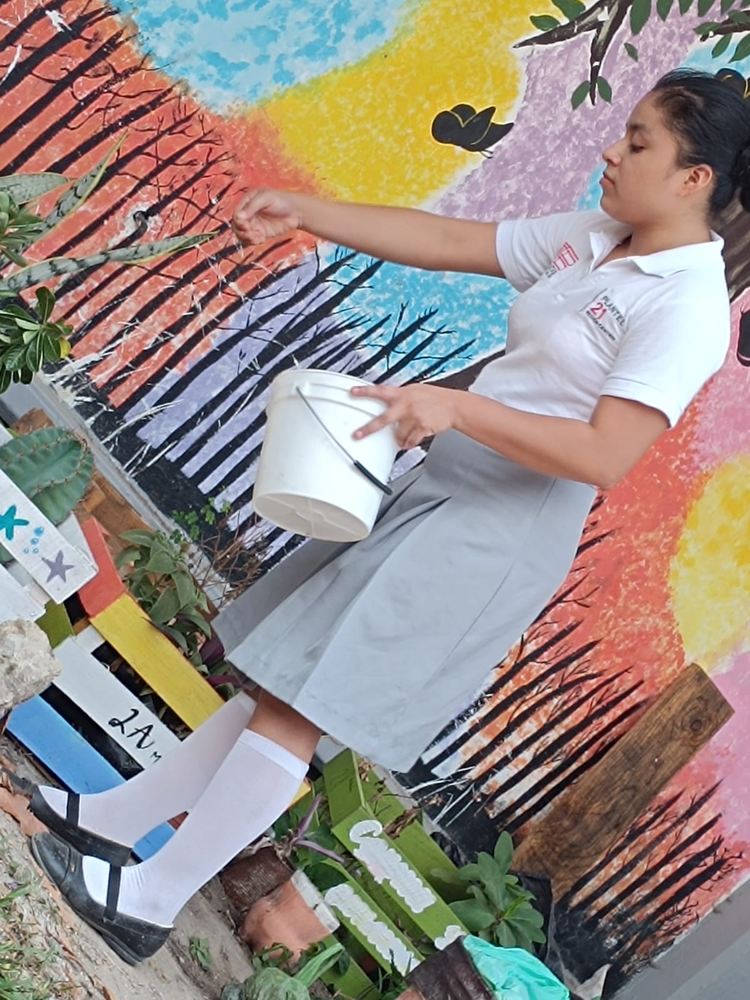
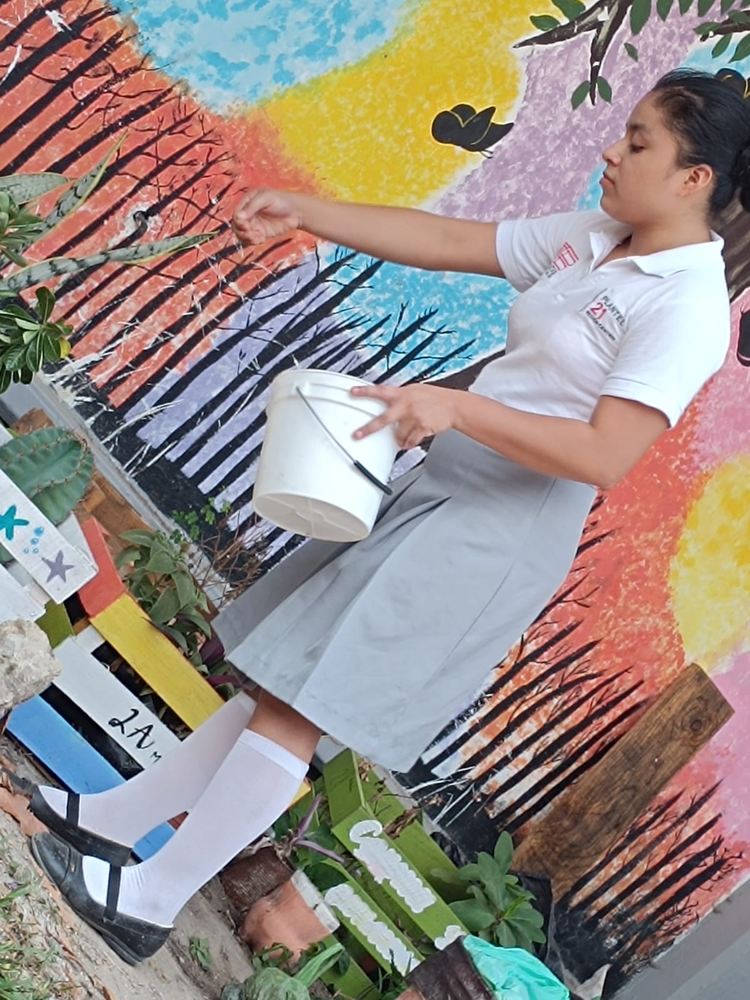

Los huertos escolares son espacios dentro de las instalaciones de las escuelas dedicados al cultivo de plantas, vegetales y hierbas. Estos huertos se utilizan como una herramienta educativa para que los estudiantes aprendan sobre agricultura, medio ambiente, nutrición y sostenibilidad
Tienen una gran importancia por sus múltiples beneficios en diversos ámbitos educativos, sociales, ambientales y de salud.
Los huertos escolares son una herramienta educativa integral que no solo enriquece el aprendizaje académico, sino que también promueve el desarrollo personal, social y ambiental de los estudiantes. Fomentan una conexión más profunda con la naturaleza, la sostenibilidad y la comunidad, preparando a los estudiantes para ser ciudadanos responsables y conscientes.
Nuestro Huerto Comenzo el 19 de abril del 2024, el cual esta siendo dirigido por el Ing. Alejandro Martinez Vargas y La Lic. Laura Perales Vara, este huerto esta relacionado con todas las materias desde matematicas para calcular la tierra y composta hasta humanidades para escribir un diario sobre como cuidamos el huerto y asi cada materia tiene actividades marcadas sobre el huerto escolar del 2do Semestre Grupo A
Todos los dias cada integrante se encargaba de regar una planta, como por ejemplo el lunes un compañero, el martes otro y el miercoles otro y asi sucesivamente
Maria Teresa Arias de la Rosa
Libni Sarahi de la Cruz Hernadez
Tania Pamela de la Cruz Alvarez
Fausto Javier de la Cruz Perez
Erik Eduardo Bernardo de la Cruz
Jesus Arias Arias